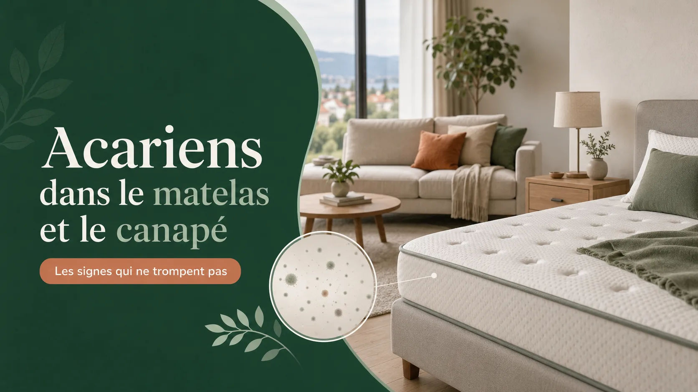

Blog Happy Move
Conseils déménagement, débarras et nettoyage à Genève
Nos guides pratiques pour préparer un départ en EMS, organiser un débarras ou réussir un état des lieux de sortie.

NettoyageAcariens dans le matelas et le canapé : les signes qui ne trompent pas
6% des Suisses sont allergiques aux acariens de la poussière domestique. Les signes à repérer, ce qui marche vraiment selon l'OFSP et aha! Centre d'Allergie Suisse — et ce qui ne sert à rien.
18 août 2026 Départ en EMS
Départ en EMS
Préparer un départ en maison de retraite à Genève : 5 conseils pour une transition en toute sérénité
Démarches administratives, tri et débarras, organisation du déménagement, aspect émotionnel et remise du logement — nos 5 conseils pour aborder cette transition sereinement.
15 juillet 2025 Départ en EMSNos conseils pour mieux vivre les transitions vers une maison de retraite
Guide pratique complet : résiliation de bail, changement d'adresse (Swisscom, La Poste, SIG, OCPM...), liste officielle des EMS et IEPA, tri et associations de dons à Genève.
Mis à jour le 19 juillet 2026